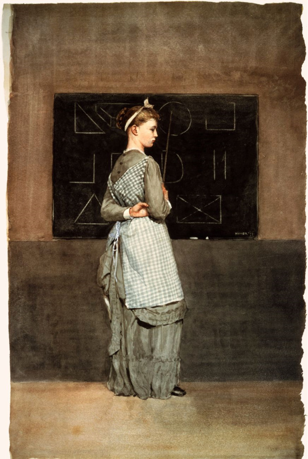

An operating system is the manager for the various resources of a computer, including the CPU (central processing unit), the memory, and the disk. When an operating system virtualizes memory, each running program uses a virtual address space that is mapped onto the machine’s memory. Memory is an array of bytes that can be read (accessed) or written (updated). A primary function of the OS is to virtualize resources and enact persistent data storage. As such, it provides a standardized mode of data accession via system calls. All design of operating systems must take into account the minimization of overheads (excess use of memory or space) while optimizing its performance.
The file system stores the files on disk and is primarily concerned with the persistence of these files (that is, the reliability of a file’s persistence). Persistent storage is key to a user’s ability to retrieve data in the wake of a system failure. The file system receives system calls and fulfills the requests. A procedure call is routine with a privilege level of user mode (that is, the hardware restricts an application’s access and capability), while a system call requires a higher privilege level known as kernel mode. Any input/output request or an expansion of memory requires kernel mode.
There's no other company that could make a MacBook Air and the reason is that not only do we control the hardware, but we control the operating system. And it is the intimate interaction between the operating system and the hardware that allows us to do that. There is no intimate interaction between Windows and a Dell notebook.
- Steve Jobs
Scheduling
An operating system can employ a variety of scheduling policies. One such policy is FIFO (First In, First Out) which has the advantage of easy implementation but can be derailed by a single time-consuming resource that hijacks the resource. Another option for scheduling is a fair share scheduler which allocates time proportionally based on a lottery system with tickets for each process.
Multiprocessors
The introduction of more CPUs does not ensure that the OS will run more quickly or more efficiently. They must be used in tandem with threads to allow an application's processes to run in parallel. Then work can be equitably divided among the CPUs. Multi-threading can enable concurrent processes, but it must be done with caution, esp.as it pertains to shared data.
Caches
A cache is memory that is smaller and more easily accessible as compared to the main memory of a given operating system. The main memory of the OS is the Random Access Memory (RAM). Temporal and spatial locality inform the design of caches, according to which memory accessed in a period of time is likely to be accessed again, and memory accessed in a particular location is likely to access nearby data as well.
Synchronization
An operating system containing multiple central processing units must grapple with a more complicated the caching process. Mutual exclusion devices (ex. locks) will improve synchronization of data across the CPUs by atomically updating data and coordinating the smooth operation of the scheduling queue.
